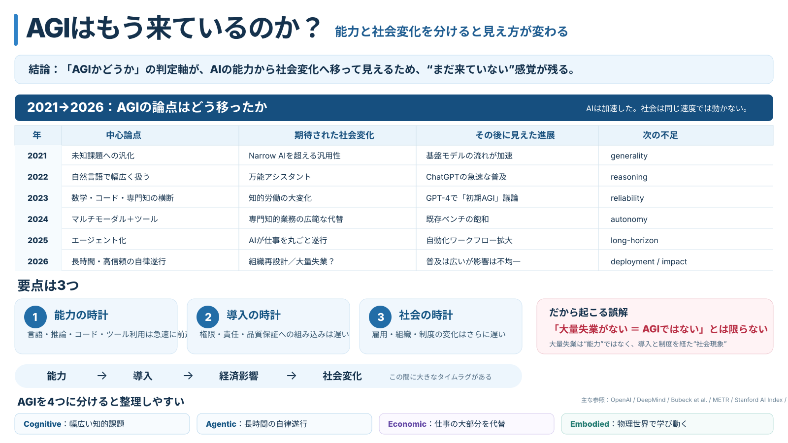

1
能力の時計
言語、推論、コード、マルチモーダル、ツール利用など、AIそのものの能力は非常に速く進んだ。
「AIの能力」と「AGIが来たら起きるはずだった社会変化」を分けると、見え方が変わる。

結論から言うと、私が感じていた違和感は、「AGIかどうか」の判定軸が、AIそのものの能力から、AIによって起きる社会変化へ少しずつ移って見えることから来ているのではないか、と考えています。
例えば「大量失業が起きていないから、まだAGIではない」という感覚です。大量失業は重要な社会現象ですが、それはAIの能力そのものではありません。AIができること、実際の業務に導入されること、経済に影響すること、そして社会制度まで変わることには、それぞれ時間差がある可能性があります。
言語、推論、コード、マルチモーダル、ツール利用など、AIそのものの能力は非常に速く進んだ。
業務フロー、権限、品質保証、責任分担へAIを組み込む速度は、能力向上より遅い。
採用、賃金、組織、教育、法律などが変わる速度は、さらに遅い可能性がある。
私自身、2021年頃から機械学習を勉強しながらAGIの議論を追ってきました。当時と今を比べると、「これができたらかなりAGIらしい」と感じる能力が実現するたびに、次の不足点が前面に出てきたように見えます。
もちろん、下の表は「その年に世界共通のAGI定義がこうだった」という意味ではありません。研究・製品・社会議論を振り返って、注目されるボトルネックがどのように移動して見えたかを整理した仮説です。
| 年 | 目立った論点 | 期待された変化 | その後に見えた進展 | 次に目立った不足 |
|---|---|---|---|---|
| 2021 | 未知課題への汎化 | Narrow AIを超える汎用性 | 基盤モデルと汎化能力の発展 | generality |
| 2022 | 自然言語で幅広く扱えるか | 万能アシスタント | ChatGPTの急速な普及 | reasoning |
| 2023 | 数学・コード・専門知を横断できるか | 知的労働の大変化 | GPT-4を「初期の不完全なAGI」と見る議論も登場 | reliability |
| 2024 | マルチモーダル、ツール、より難しい評価 | 専門知的業務の広範な代替 | 既存ベンチマークの飽和と、より難しい評価への移行 | autonomy |
| 2025 | エージェント化 | AIが仕事を丸ごと遂行 | 自動化ワークフロー・エージェント利用が拡大 | long-horizon reliability |
| 2026 | 長時間・高信頼の自律遂行 | 組織再設計、大規模な仕事代替 | AI利用は広い一方、エージェント導入や労働市場への影響はまだ不均一 | deployment / economic impact |
「できるようになった能力」がAGIの証拠になるより、「まだ起きていない社会変化」がAGIではない証拠として強く意識されるようになっていないか。
2021年のDeepMindの研究紹介では、未知の条件や未経験タスクへ適応できる、より一般的なエージェントを作ること自体が重要な研究課題として扱われていました。2023年にはMicrosoft Researchの研究者らがGPT-4について、数学、コード、視覚、医学、法律、心理などを横断する能力から「初期の、まだ不完全なAGIと合理的に見ることもできる」と論じています。
2024年のStanford AI Indexでは、ImageNet、SQuAD、SuperGLUEなど既存ベンチマークの性能が飽和し、より難しい数学・推論・コーディング・エージェント評価へ測定対象が移ったことが整理されています。つまり、能力の進展に応じて「次に測るべきもの」が変わること自体は、研究として自然な現象でもあります。
ここが、私の違和感の中心です。
仮にAIが多くの知的作業を技術的には実行できても、企業が即座に人間を置き換えられるとは限りません。実際の仕事には、権限、機密情報、説明責任、品質保証、失敗時の復旧、顧客との関係、既存システム、法律、社内政治などが絡みます。
そのため、「AIができる」から「人間の雇用が減る」までの間には、少なくとも次の段階があります。
Capability（技術的にできる） → Deployment（業務で使える） → Economic impact（費用・生産性・採用が変わる） → Social transformation（組織・制度・社会が変わる）
Stanford AI Index 2026は、この時間差を考えるうえで象徴的です。調査対象組織の88%がAIを利用し、70%が少なくとも一つの業務機能で生成AIを利用する一方、AIエージェントの導入はほぼすべての業務機能で一桁%にとどまると報告しています。また、若いソフトウェア開発者など一部では雇用影響が現れている一方、経済全体では大規模な雇用減少はまだ確認されていません。
ILOの2025年分析も、世界の労働者の約4人に1人が生成AIへの何らかの曝露を持つ職業にいる一方、多くの仕事は「消滅」より「変容」の可能性が高いとしています。
したがって、大量失業がまだ起きていないことは重要な観測事実ですが、それだけから「AIの汎用的知能がまだ一定水準に達していない」とは直接言えません。
ここは反対側も押さえておく必要があります。
例えばOpenAI CharterはAGIを、単に幅広い問題を解けるAIとは定義していません。そこでは、「経済的に価値のある仕事の大部分で人間を上回る、高度に自律的なシステム」という強い定義を採用しています。この定義なら、自律性や経済的仕事能力が不足している限り「まだAGIではない」という判断は、後から追加された条件ではありません。
一方、Google DeepMindの「Levels of AGI」は、AGIを一つのON/OFFで扱わず、能力の幅（generality）、深さ・性能（performance）、さらに展開時の自律性（autonomy）などを分けて評価する考え方を提案しています。
この見方をすると、今の混乱はかなり整理できます。
この4つは厳密な標準用語として固定された分類ではなく、議論を整理するための便宜的な分け方です。しかし、「Cognitiveはかなり進んだが、Agentic・Economic・Embodiedは同じ速度では進んでいない」と考えると、現在のAIが「ものすごくAGIっぽいのに、AGI社会には見えない」理由を説明しやすくなります。
モデルが高性能になったことで、以前は見えにくかった別のボトルネックも明確になりました。
難しいコードを一度書けることと、一週間のプロジェクトを安心して任せられることは違います。実務では、目的を保持し、必要な情報を探し、曖昧さを処理し、途中結果を検証し、失敗から復旧し、最後まで責任ある成果物にまとめる必要があります。
METRの「Task-Completion Time Horizon」は、この違いを測ろうとする試みの一つです。人間の専門家ならどれくらい時間がかかるタスクまで、AIエージェントが一定の成功率で完了できるかを見る指標で、2026年5月時点でも継続的に更新されています。
ここから見えるのは、単なる「IQのような賢さ」ではなく、信頼して仕事を任せられる時間幅が、現在の重要な能力軸になっていることです。
つまり、条件が全部恣意的に追加されたというより、AIが進歩したからこそ、次の壁が実際に見えるようになった面もあります。
言語、知識、推論、コード、画像、音声、ツール利用、計画など。ここ数年、最も速く進んだ時計です。
社内データへの接続、権限、セキュリティ、監査、責任分担、品質保証、業務フロー再設計。技術デモよりずっと時間がかかります。
採用、賃金、職種、教育、企業構造、社会保障、法律。さらに多くの人や制度が関わるため、変化は遅く、不均一になります。
AGI級に見える知能が先に現れ、その数年後に「AGI社会」が現れる、という時間差は十分あり得る。
もしこの仮説が正しければ、「社会がまだ変わっていないからAI能力もAGI未満だ」という逆算は危うくなります。むしろ見るべきなのは、どの時計がどこまで進んでいるかです。
私自身は、ここを無理にYES / NOで決めなくてよいと思うようになりました。
フィジカル世界を除く知的な「汎用性」という点では、2021年頃に想像していた境界をすでにかなり越えているように感じます。一方で、長時間の自律遂行、信頼性、継続学習、責任を伴う意思決定、物理世界への適応では、人間との差がまだ大きい。
そのため現在を、
「AGIがある日突然到来する前夜」ではなく、複数の能力と社会実装が別々の速度で境界を越えていく移行期
と見る方が、私にはしっくりきます。
そして、AGIについて議論するときには次の二つを意識して分けたいと思います。
DefinitionAGIそのものに必要だと考える能力は何か。
PredictionAGIが登場した結果として、社会に何が起きると予想するか。
「大量失業」「GDPの急成長」「研究開発の爆発的加速」「人員の少ない企業」といった話は極めて重要です。ただ、それらはAGIの定義そのものなのか、AGI後についての予測なのかを区別しておかないと、予測が外れるたびにAGIの意味そのものが動いて見えてしまいます。
数年後に振り返ったとき、「AGIは○月○日に来た」とはならず、「気づけば私たちは数年間その移行期の中にいた」と評価されるのかもしれません。
記事の時系列表は、これらを含む資料をもとにした筆者の整理です。特定機関が2021→2026の各年をこのように公式分類しているわけではありません。